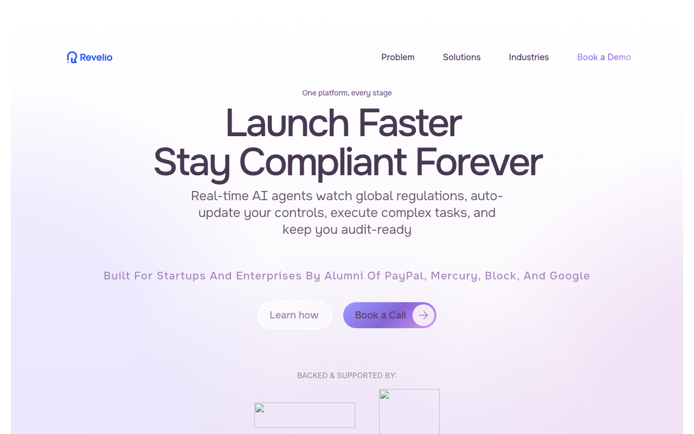
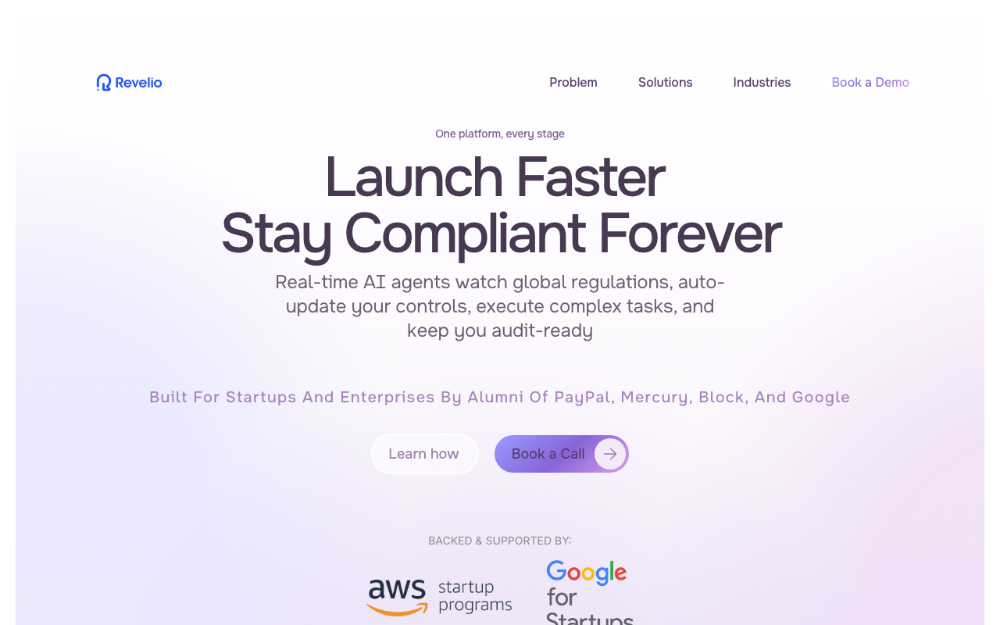
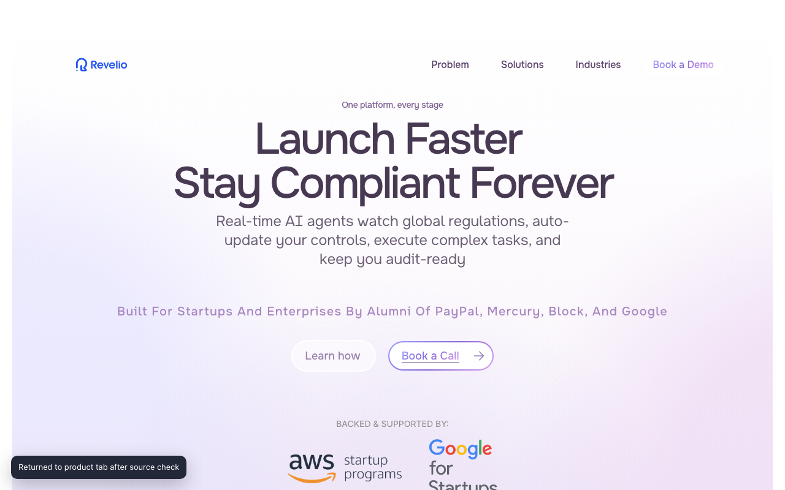
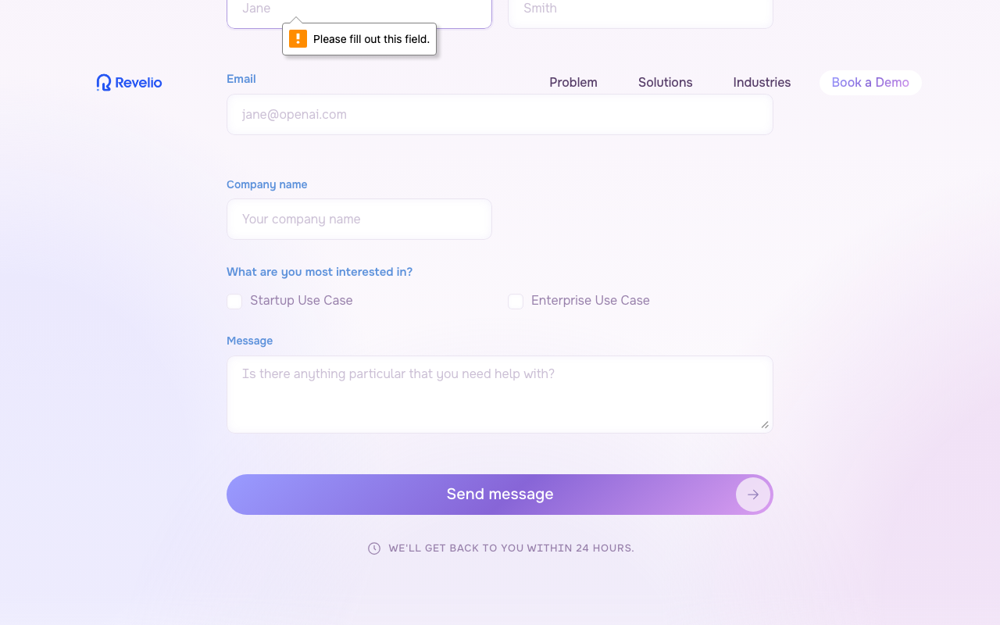

Think aloud: This is Revelio - an AML compliance automation tool. Headline says it watches regulations and auto-updates controls. Sounds relevant to my backlog problem, but I want to see who's actually backing this before I trust it.
URL/context: https://www.reveliolabs.app/

Think aloud: actually showing a little animation - AML Policy, KYC Procedures, Risk Framework all marked as Updated. That's a decent illustration of the auto-update claim, but I'd want more than a demo animation - I need to see the real mechanics, not just a slick graphic.
URL/context: https://www.reveliolabs.app/

Think aloud: Backed by AWS and Google startup programs - decent signal, but I want to see actual client names or case studies before I trust this for AML work. Let me keep scrolling to check the industries and security sections.
URL/context: https://www.reveliolabs.app/

Think aloud: That animation's just looping through the same policy update demo again. I've seen the gist - now I want proof: client logos, case studies, or a security/compliance certification section.
URL/context: https://www.reveliolabs.app/

Think aloud: This actually lays out the workflow clearly now - questionnaire setup, real-time monitoring against FinCEN/FCA/MAS, gap analysis, one-click policy updates with audit trails. That's specific enough to explain what it automates for AML work. I also see a Book a Call link going to a real Calendly page, which is a proper demo booking path, not just a vague contact form.
URL/context: https://www.reveliolabs.app/

Think aloud: That booking link just took me to a dead page on Calendly - not found. That's not a good sign if I'm trying to get my risk team on a call with them. Let me check if there's a proper contact form instead, since I saw a send message option further down.
URL/context: https://www.reveliolabs.app/

Think aloud: I'm not filling in personal details just to test a form that already threw a validation error - that's not how I'd actually reach out. I've got enough now: the workflow's explained, but the demo link is broken and I don't see any SOC 2 or ISO badge anywhere.
URL/context: https://www.reveliolabs.app/